CSS3
Zonder CSS3 heeft HTML5 niet heel veel meer waarde. De nieuwe mogelijkheden in CSS3 zijn spectaculair te noemen. Een aantal vernieuwingen op een rij.
| Nieuwe mogelijkheden | |
| Borders | Het is mogelijk om divisies ronde hoeken te geven. |
| Box shadow | Het is mogelijk om een divisie een schaduw te geven. |
| Tekst effects | Er zijn verschillende tekst effects mogelijk |
| Fonts | Je kunt nu andere lettertypes implementeren zonder dat de gebruiker deze hoeft te downloaden. |
| Transforms | De mogelijkheid om objecten te draaien |
| transitions | Overgangen creëren |
| Animations | Het maken van bewegingen |
Je ziet dat er een hoop nieuwe mogelijkheden bij zijn gekomen. Let er wel goed bij op dat niet alle nieuwe mogelijkheden worden ondersteund door elke webbrowser. Bij elk onderdeel wordt aangegeven welke webbrowser het ondersteund maar dit zou verouderd kunnen zijn. Aan te raden is om dit van te voren te controleren op http://www.html5test.com.
| Let op: |
| Niet elke webbrowser ondersteund alle nieuwe mogelijkheden van CSS3. |
Internet Explorer 9 ondersteunt aardig wat nieuwe mogelijkheden. Versie 8 en lager helemaal niet. Bij elke update van een webbrowser worden er weer nieuwe functionaliteiten toegevoegd. Bij elke opdracht staat een tabel waarin je kan aflezen vanaf welke versie een bepaalde eigenschap wordt ondersteund. Het is dus aan te raden dat je controleert welke versie van webbrowser jij hebt.
Het kan zijn dat er voor een aantal versienummers een prefix staat. Dit kan zijn -webkit- voor Chrome, Safari en later ook Opera. Laatst genoemde had vroeger een eigen prefix namelijk -o-. Inmiddels zijn ze over naar het webkit van Chrome. -moz- voor firefox en heel af en toe -ms- voor Internet Explorer. Dit betekend dat je de bewuste prefix moet toevoegen aan je css code om het voor die bewuste browser werkbaar te maken. In het lesmateriaal komen we hier later nog op terug. Als je dus onderstaand overzicht bekijkt zie je dat border-radius werkt vanaf IE 9. Daaronder wordt dus niet ondersteund.
Borders
| Property | |||||
|---|---|---|---|---|---|
| border-radius | 9.0 | 5.0 4.0 -webkit- |
4.0 3.0 -moz- |
5.0 3.1 -webkit- |
10.5 |
| box-shadow | 9.0 | 10.0 4.0 -webkit- |
4.0 3.5 -moz- |
5.1 3.1 -webkit- |
10.5 |
| border-image | 11.0 | 16.0 4.0 -webkit- |
15.0 3.5 -moz- |
6.0 3.1 -webkit- |
15.0 11.0 -o- |
Met CSS2 was het nog vrij lastig om divisies ronde hoeken te geven. In CSS3 is dat een stuk makkelijker geworden. In voorbeeld 3-1 zie je met welke CSS code je dit doet.
| Voorbeeld 3-1 |
| 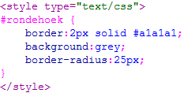 |
Met de border-radius maak je dus een ronde hoek. Hoe hoger het aantal pixels, hoe ronder (groter) de hoek wordt. Om deze zichtbaar te maken moet de divisie een achtergrond kleur hebben en eventueel een rand.
| Opdracht 1: divisie met ronde hoek maken |
Maak een nieuwe HTML5 pagina aan.
Sla het bestand op als Opdracht3-1.html. Test het in je webbrowser. Je divisie moet er dan ongeveer uitzien zoals in voorbeeld3-2. |
| Voorbeeld 3-2 |
| 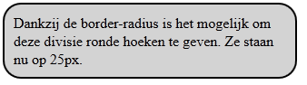 |
Bij het gebruik van ronde hoeken is het altijd aan te raden om een padding toe te voegen. De rand kan anders door de tekst heen “snijden”. Je ziet dat elke hoek even rond is. Je kunt er ook voor kiezen om elke hoek apart een aantal pixels te geven. Dit doe je met de waardes zoals aangegeven in de tabel hieronder
| Ronde hoeken | |
| border-top-left-radius | Linkerbovenhoek |
| border-top-right-radius | Rechterbovenhoek |
| border-bottom-left-radius | Linkeronderhoek |
| border- bottom -right-radius | Rechteronderhoek |
Dit kan ook sneller. Net zoals bij de eigenschap border kun je bij border-radius ook meerdere waardes invullen. Bekijk voorbeeld 3-3.
| Voorbeeld 3-3 |
| 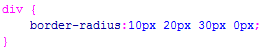 |
De eerste waarde geldt voor de linkerbovenhoek. De tweede voor rechtsboven, de derde voor rechtsonder en de vierde voor linksonder.
| Opdracht 2: divisie met ronde hoek maken |
Maak een nieuwe HTML5 pagina aan.
Sla het bestand op als Opdracht3-2.html. Test het in je webbrowser. Je divisie moet er dan ongeveer uitzien zoals in voorbeeld3-4. |
| Voorbeeld 3-4 |
| 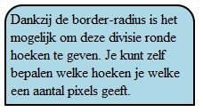 |
Box-shadow
Het is met CSS3 ook een stuk gemakkelijker geworden om divisies een schaduw te geven. Bij de box-shadow moeten meerdere waardes ingevuld worden. De syntax is als volgt:
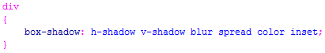
| waarde | eigenschap |
| h-shadow | Verplicht. De positie van de horizontale schaduw. Er kunnen ook negatieve waardes worden ingevuld. |
| v-shadow | Verplicht. De positie van de verticale schaduw. Er kunnen ook negatieve waardes worden ingevuld. |
| blur | Optioneel. De blur afstand |
| spread | Optioneel. De grootte van de shaduw |
| color | Optioneel. Kleur van de schaduw |
| Inset | Optioneel. Zorgt ervoor dat de schaduw aan de binnenkant van de divisie komt i.p.v. erbuiten. |
| Opdracht 3: box-shadow |
Maak een nieuwe HTML5 pagina aan.
Sla het bestand op als Opdracht3-3.html. Test het in je webbrowser. Je divisie moet er dan ongeveer uitzien zoals in voorbeeld3-5. |
| Voorbeeld 3-5 |
| 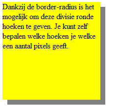 |
| Opdracht 4: namaken |
Maak een nieuwe HTML5 pagina aan.
Sla het bestand op als Opdracht3-4.html. Test het in je webbrowser. |
| Voorbeeld 3-6 |
| 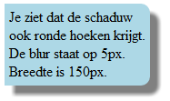 |
Text Effects
| Property | |||||
|---|---|---|---|---|---|
| text-shadow | 10.0 | 4.0 | 3.5 | 4.0 | 9.5 |
In CSS3 zijn verschillende tekst effecten mogelijk. Net zoals je een divisie een schaduw kan geven, kan dat bij tekst nu ook. De werking is hetzelfde als bij box-shadow.
| waarde | eigenschap |
| h-shadow | Verplicht. De positie van de horizontale schaduw. Er kunnen ook negatieve waardes worden ingevuld. |
| v-shadow | Verplicht. De positie van de verticale schaduw. Er kunnen ook negatieve waardes worden ingevuld. |
| blur | Optioneel. De blur afstand |
| color | Optioneel. Kleur van de schaduw |
| Voorbeeld 3-7 |
| 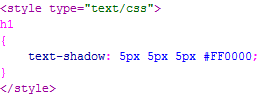 |
| Opdracht 5: namaken |
Maak een nieuwe HTML5 pagina aan.
Sla het bestand op als Opdracht3-5.html. Test het in je webbrowser. De pagina moet eruit zien als voorbeeld 3-8. |
| Voorbeeld 3-8 |
| 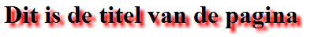 |
| Voorbeeld 3-9 |
| 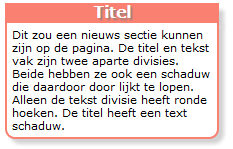 |
| Opdracht 6: namaken |
Maak een nieuwe HTML5 pagina aan.
Sla het bestand op als Opdracht3-6.html. Test het in je webbrowser. De pagina moet eruit zien als voorbeeld 3-9. |
Fonts
Het is nu mogelijk om gebruik te maken van andere letter types dan de standaard voorgeschreven lettertypes. Zelfs zonder dat de gebruiker het bewuste lettertype geïnstalleerd moet hebben. Dit doe je met de @font-face regel.
| Property | |||||
|---|---|---|---|---|---|
| TTF/OTF fonts | 9.0* | 4.0 | 3.5 | 3.1 | 10.0 |
| WOFF fonts | 9.0 | 5.0 | 3.6 | 5.1 | 11.1 |
| SVG fonts | Not supported | 4.0 | Not supported | 3.2 | 9.0 |
| EOT fonts | 6.0 | Not supported | Not supported | Not supported | Not supported |
* Werkt alleen als het font wordt ingesteld als "installable".
Je ziet dus dat vanaf IE 9 het woff type wordt ondersteund door alle webbrowsers. Dit lettertype valt dus ook aan te raden. Het is niet moeilijk om bijvoorbeeld ttf om te zetten naar eot of woff.
| Let op: |
| Internet Explorer 8 en lager ondersteunen de nieuwe @font-face regel niet! |
| Voorbeeld 3-10 |
| 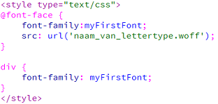 |
Je moet het @font-face gebruiken om de naam te verzinnen voor je lettertype (font-family) en src voor de locatie van het lettertype. Vervolgens koppel je d.m.v. font-family dat lettertype aan een bepaalde divisie of class.
Als je een lettertype alleen in ttf formaat hebt kun je op de website http://ttf2woff.com/ deze heel gemakkelijk omzetten naar een woff bestand.
| Opdracht 7: font gebruiken |
Maak een nieuwe HTML5 pagina aan.
Sla het bestand op als Opdracht3-7.html. Test het in je webbrowser. Het lettertype moet nu zichtbaar zijn. |